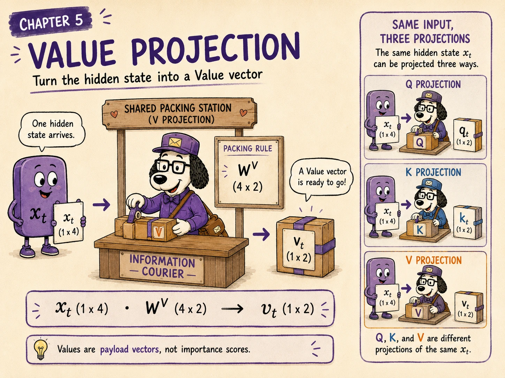
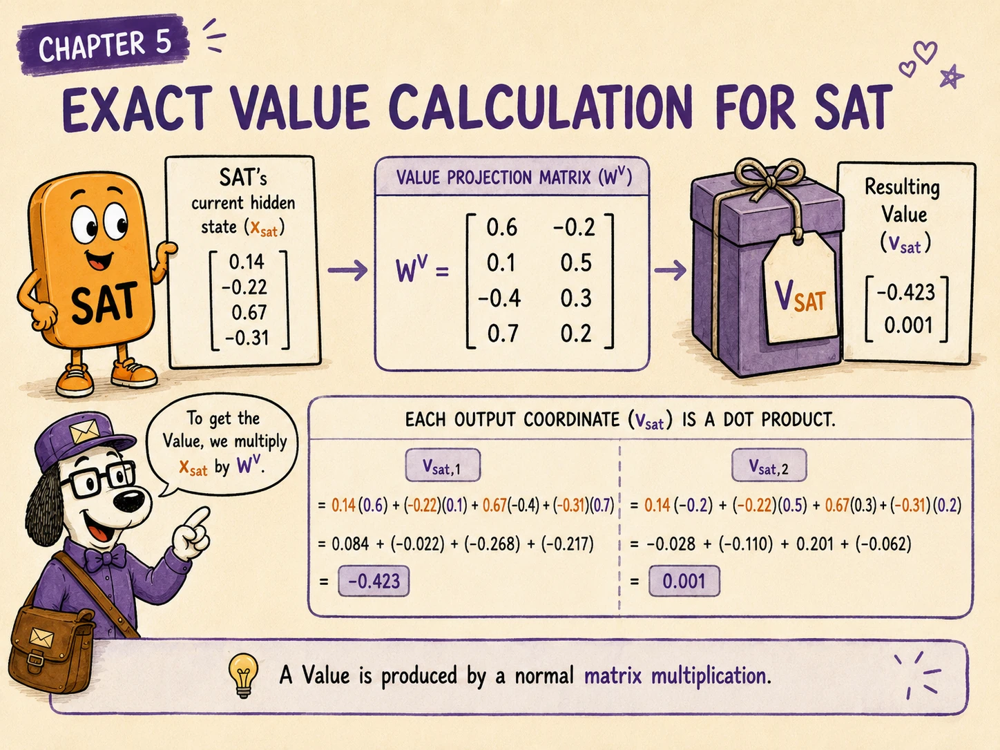
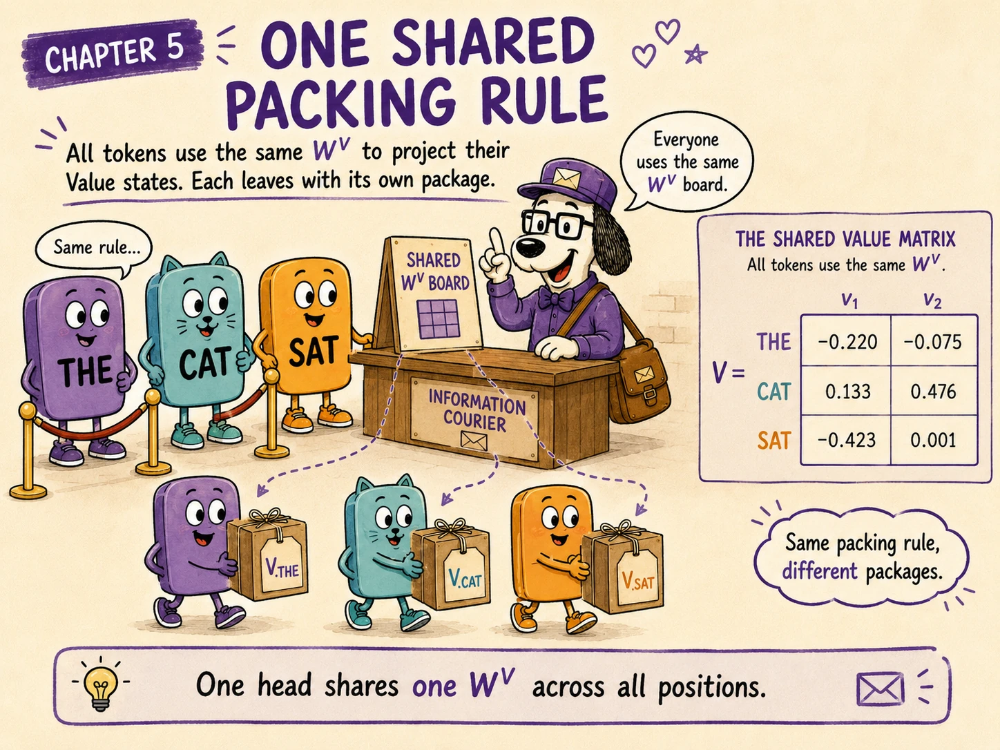
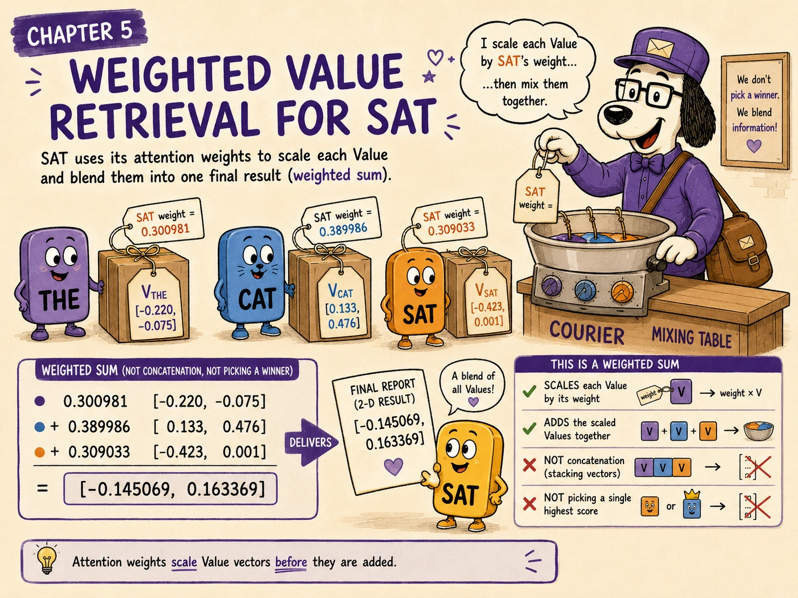
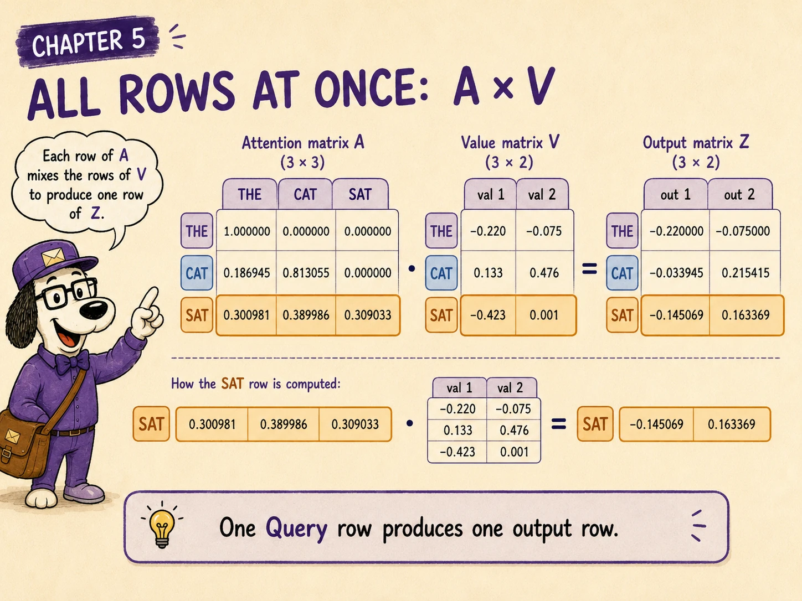
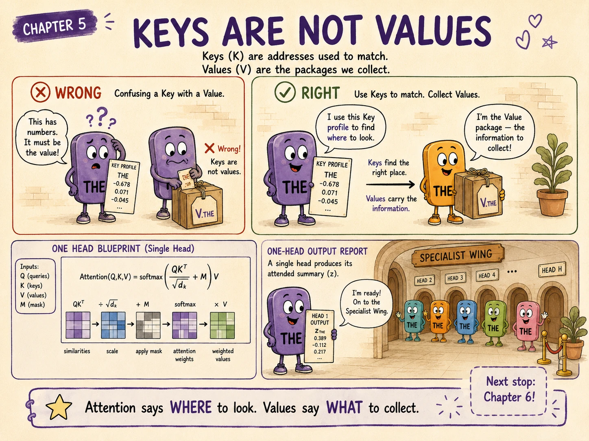

Chapter 4 produced the attention-weight matrix:
For our three-token example:
Those weights tell every Query how strongly it matched each allowed Key.
But a match score is not the information that should flow into the output.
What does each matched token actually contribute?
That is the job of the Value projection:
and the resulting Value vectors:
Queries and Keys decide where to look. Values provide the information that comes back.
The matching desk gives SAT this distribution:
| Source position | SAT's attention weight |
|---|---|
| THE | 0.300981 |
| CAT | 0.389986 |
| SAT | 0.309033 |
The report says how much each position should matter.
It does not contain the payload from those positions.
The Information Courier visits each allowed token, collects its Value vector, scales that vector by the assigned attention weight, and combines the pieces.
For SAT:
The result (z_{\text{sat}}) is the output of this attention head for SAT.

For token position (t):
The ingredients are:
The Value projection is applied independently to every token position, just like the Query and Key projections.
For the full sequence:
In the story:
| Story role | Transformer operation |
|---|---|
| Token's current situation | Hidden state (x_t) |
| Information Courier's packing rule | Value projection (W^V) |
| Information package | Value vector (v_t) |
| Match strengths | Attention weights (a_{ij}) |
| Combined delivery | Head output (z_i) |
The word “Value” does not mean a score saying how valuable a token is.
Importance is represented by the attention weight.
A Value is the vector payload that will be multiplied by that weight.
The same hidden state can be projected three different ways:
The three projections have different jobs:
| Representation | Job |
|---|---|
| Query (q_t) | Express what position (t) is seeking |
| Key (k_t) | Express when position (t) should match a search |
| Value (v_t) | Express what position (t) can contribute after matching |
Usually:
and therefore:
are generally different even though they begin with the same (x_t).
We continue with the hidden-state matrix used throughout the book:
The rows belong to THE, CAT, and SAT.
For this attention head, suppose the learned Value projection is:
Its shape is:
We use two Value coordinates in this small example:

SAT's current hidden state is:
Its Value is:
Substituting the numbers:
Therefore:

The same (W^V) is applied to every row of (X):
The result is:
So:
The Value matrix has shape:
That means:
The same Value projection is shared across positions in one head. Different hidden states produce different payloads.
For one token:
The Value projection has shape:
Therefore:
For (n) tokens:
The Value width (d_v) does not have to equal (d_k) for the weighted sum to be valid.
Queries and Keys need the same width because they take dot products:
Values are not dotted with Queries. They are multiplied by scalar weights and added.
In many standard implementations, each head uses:
but equality is a design choice, not a mathematical requirement of the attention formula.
For Query position (i), the output of one attention head is:
Here:
Because the weights in a softmax row are non-negative and sum to 1, (z_i) is a weighted average of the allowed Value vectors.
It is not usually an exact copy of one Value.
THE's attention row is:
Therefore:
THE cannot see later positions, so the first head output is simply its own Value.
CAT's attention row is:
Therefore:
For the first coordinate:
For the second coordinate:
So:
CAT's output blends information from THE and CAT.

SAT's attention row is:
Therefore:
For the first coordinate:
For the second coordinate:
So:
SAT's head output is a new vector assembled from all three visible positions.

Stacking every output row gives the head-output matrix:
All outputs can be calculated at once:
Substituting our matrices:
The result is:
The attention matrix has shape:
The Value matrix has shape:
Therefore:
So:
For our example:
The output contains one (d_v)-dimensional result for every Query position.
Row (i) of (A) contains Query (i)'s retrieval weights.
Multiplying that row by (V) produces row (i) of (Z), the retrieved result for that Query.
We now have every major piece of scaled dot-product attention:
Combining the final two steps:
And substituting the projections from (X):
This is the core computation performed by one causal self-attention head.
Suppose a token is highly relevant to a search.
The features that make it easy to recognise need not be the same features that should be transferred into the output.
A simple database analogy helps:
The analogy is incomplete because Transformer Keys and Values are learned vectors rather than literal database fields. But it captures the separation of responsibilities.
The model can learn:
A traditional lookup may return one record.
Attention usually retrieves a blend:
If one weight is close to 1, attention behaves approximately like selecting one Value.
For example:
If several weights are substantial, the output combines several Value vectors.
That allows a token position to gather multiple kinds of contextual evidence in one head.
A Value coordinate does not arrive with a label such as “subject information” or “past tense.”
Its meaning is distributed, learned, layer-dependent, and useful because later network operations know how to process it.
The matrix (Z) is the output of one attention head.
A real Transformer block normally performs additional work:
Exact ordering depends on the architecture. For example, pre-normalisation and post-normalisation blocks place layer normalisation differently.
So it would be inaccurate to say:
(Z) is the final contextual embedding produced by the entire Transformer.
A better statement is:
(Z) is the contextual result produced by one attention head before the remaining block operations.
In ordinary multi-head attention, head (r) has its own projections:
It therefore produces its own:
The output of each head is:
Different heads can learn different matching spaces and different payload spaces.
One head may distribute its attention differently from another, and even identical weights would mix different information if the heads use different Value projections.
Implementations commonly compute all Query, Key, and Value projections with large matrix multiplications:
The results are reshaped into head dimensions, often something like:
This packed computation does not erase the conceptual distinction between heads. Separate slices of the larger matrices still contain separate learned projection parameters.
During token-by-token generation, the model repeatedly attends to previous positions.
Past Keys and Values can be cached because their hidden states at the current layer do not change when a new token is appended.
For the newest token, the model computes:
It then compares the new Query with the cached Keys and combines the cached Values plus the new Value.
This is the basic reason a KV cache can accelerate autoregressive decoding.
The cache stores Keys and Values, not attention weights, because the newest Query creates a new set of weights at every generation step.
Values are vectors. Attention weights are scalars.
The operation is:
not a comparison between two weights.
The correct full-sequence operation is:
with shapes:
Keys decide matching. Values carry the information mixed into the output.
Softmax produces a distribution. Unless it is extremely sharp, the result is a blend of several Values.
One head produces width (d_v). Multiple heads and the output projection restore or transform the combined representation into the model's working width.
A masked position receives zero attention weight, so its Value contributes nothing to that Query's output even though the Value vector may have been computed.
A learned payload representation of one token position for one attention head.
Queries and Keys.
Values.
It is the scalar weight controlling how much Value (v_j) contributes to output (z_i).
For (n) positions and Value width (d_v):
The features useful for deciding relevance need not be the same features that should be transferred after a match.
Their layer inputs and projections do not change merely because a later token is appended.
No. Multi-head combination, output projection, residual processing, normalisation, and the MLP still remain.
Every token creates a Value:
For the whole sequence:
The attention weights from Chapter 4 mix those Values:
For one Query position:
The complete one-head operation is:
In the dating-service story:
The Question Coach creates the search. The Profile Writer creates searchable descriptions. The matching desk assigns weights. The Information Courier delivers a weighted blend of the matched information.
We have now completed one full attention head from input state to retrieved output.

One head provides one learned view of relevance and one learned kind of payload.
Real Transformers usually run several heads in parallel:
Their outputs are concatenated and mixed through an output projection:
The next chapter can follow how multiple heads cooperate without losing the token dimension.